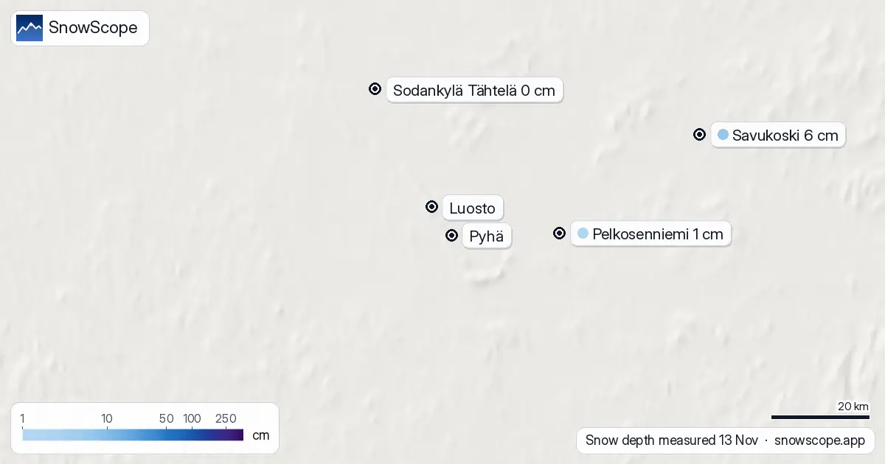

Pyhän ja Luoston lumensyvyys: 0–9 cm, edessä luminen viikko (14. marraskuuta 2026)
Pyhän ja Luoston ympärillä lumi on laikukasta ja ohutta. Aamulla 13. marraskuuta 22 km:n päässä 156 metrissä oleva Pelkosenniemen sääasema mittasi 1 cm; Sodankylän Tähtelässä mitattiin 0 cm; Kemijärven lentoasemalla 208 metrissä oli 9 cm ja Savukoskella 6 cm. 46 talven tilastomme antavat täällä tavalliseksi lumensyvyydeksi 14. marraskuuta 15 cm, joten alue on jäljessä. Seuraavien seitsemän päivän pitäisi muuttaa tilanne.
Katso kohteen Pyhätunturi - Luosto lumiennuste reaaliajassa SnowScope-sovelluksessaLumensyvyys, puuterihälytykset ja 3D-kartta, ilmaiseksi.
Ohut ja epätasainen alku
Asemat näyttävät kaksi erilaista marraskuuta. Etelässä ja idässä Kemijärvellä ja Savukoskella ohut lumipeite on pysynyt koko viikon, nyt 6–9 cm. Lännessä ja pohjoisessa Sodankylä ja Pelkosenniemi ovat lähes paljaita. Tunturit ovat niiden välissä ja korkeammalla, joten niillä on todennäköisesti hieman enemmän lunta kuin kylissä.
Arviomme mukaan viimeisen seitsemän päivän aikana uutta lunta on tullut alle 1 cm, joten kyse on vanhasta lumesta, ei tuoreesta.

Tuleva viikko
Odotamme seuraavien seitsemän päivän aikana noin 23 cm, josta ensimmäiset 8 cm kahden seuraavan päivän aikana. Muut tarkistamamme ennusteet antavat tunturin huipulle 31–54 cm. Sää pysyy kylmänä, vettä ei juuri sada, ja lumi ulottuu alimpiin maastoihin asti. Ensi viikonloppuna maisema on todennäköisesti kunnolla valkoinen.
Kauden normaali
Tilastomme antavat tavalliseksi lumensyvyydeksi 21 cm 21. marraskuuta, 27 cm 30. marraskuuta ja 37 cm 15. joulukuuta. Joka kymmenes talvi 14. marraskuuta lunta on vain 3 cm, joten hidas alku ei ole ennenkuulumaton. Keskimääräisenä talvena lumensyvyys on suurimmillaan noin 76 cm, ja maa on valkoinen noin 204 päivää.
Avauspäivät
Pyhän julkaistun aukioloaikataulukon ensimmäinen jakso alkaa 27. marraskuuta. Luosto aikoo avata rinteensä 28. marraskuuta 2026. Molemmat luottavat ensimmäisissä rinteissä tykkilumeen.
Vinkkejä laskijoille
- Pyhä-Luoston kansallispuiston polut ovat paikoin kivisiä ja jyrkkiä; ohuella lumipeitteellä hyvät kengät voittavat sukset tällä viikolla.
- Lumi sulan suon päällä voi kätkeä märkiä kohtia; pysy merkityillä reiteillä.
- Tarkista keskusten omat sivut: Pyhä ja Luosto avaavat eri päivinä.
Lisää karttoja (ulkoiset sivustot)
Lähteet ja tekijät
- Ilmatieteen laitos, avoin data (CC BY 4.0) en.ilmatieteenlaitos.fi/open-data
- Pyhä, virallinen sivusto: avauspäivät ja hissitilanne, luettu 13.11.2026 www.pyha.fi/fi/hiihtokeskus/rinteet
- Luosto, virallinen sivusto: avauspäivät ja hissitilanne, luettu 13.11.2026 www.luosto.fi/fi
Näistä luvuista
Mitattu lumi: aamulukemat 13. marraskuuta 2026 Ruotsin (SMHI:n avoin data), Suomen (Ilmatieteen laitoksen avoin data, CC BY 4.0) ja Norjan (MET Norwayn asemaraportit, CC BY 4.0, julkaisija Ogimet) virallisilta sääasemilta. Norjan kansallinen lumikartta seNorge (NVE ja MET Norway, NLOD) antaa rinteille arviot 1 km:n ruudukossa. Omat lukumme: SnowScopen ennuste seuraaville seitsemälle päivälle hiihtokeskuksen kolmella korkeudella, verrattuna riippumattomiin ennusteisiin (ECMWF, ICON, GFS, GEM) ajalle 14.–20. marraskuuta; 46 menneen talven lumihistoria (1980-81–2025-26), korkeuden mukaan korjattu menneisyyden malli. Avauspäivät: hiihtokeskusten omat sivut, luettu 13.11.2026. Rinteiden pituus ja hissien määrä: OpenSkiMap-kartoitus.
Viralliset lumivyöryennusteet: EAWS – European Avalanche Warning Services
Viittaa tähän raporttiin
Tutkimukseen, opetukseen tai mediaan: luvut ja kaaviot ovat vapaasti käytettävissä CC BY 4.0 -lisenssillä tällä lähdeviitteellä.
SnowScope (2026), Pyhän ja Luoston lumensyvyys: 0–9 cm, edessä luminen viikko (14. marraskuuta 2026), https://snowscope.app/blog/fi/2026/11/pyha-luosto-snow-depth-14-november-2026.html, luettu 2026-11-14
SnowScope (Atlas Labs). (2026, November 14). Pyhän ja Luoston lumensyvyys: 0–9 cm, edessä luminen viikko (14. marraskuuta 2026). SnowScope snow reports. https://snowscope.app/blog/fi/2026/11/pyha-luosto-snow-depth-14-november-2026.html
BibTeX
@misc{snowscope2026pyhaluostosnowdepth14nov,
author = {{SnowScope (Atlas Labs)}},
title = {Pyhän ja Luoston lumensyvyys: 0–9 cm, edessä luminen viikko (14. marraskuuta 2026)},
year = {2026},
month = nov,
howpublished = {\url{https://snowscope.app/blog/fi/2026/11/pyha-luosto-snow-depth-14-november-2026.html}},
note = {Published 2026-11-14 15:29 UTC; accessed 2026-11-14}
}· CC BY 4.0 · Menetelmät, data ja työkalut →
Pyhätunturi - Luosto: lumi ja lämpötila korkeuden mukaan, tämä talvi ja viime talvi (työkalut) →
Seuraa: Pyhätunturi - Luosto
Ilmainen: viesti, kun uutta lunta on tulossa, ja ennuste joka aamu.
Lisää lumiraportteja

Trondheim 13. marraskuuta 2026: kaupungista ei ilmoitettu lumensyvyyttä, Ørlandissa paljas maa, Meråkerissa 5 cm, Tågdalenissa 18 cm, Rørosissa 11 cm. Mikä on tavallista marraskuun puolivälissä, ja leuto, märkä viikonloppu.

Mitattu lumi Tromssassa 13. marraskuuta 2026: saaren kaupunkiasemalla 6 cm, Lyngenissä 710 metrissä 44 cm, Bardufossissa 3 cm. Lähellä päivän tavallista, ja edessä hyvin kylmä viikonloppu.

Tampere 13. marraskuuta 2026: Tottijärvellä ja kaupungin ympäristön asemilla 0 cm, koillisessa Hyytiälässä 2 cm. Puolessa talvista Tampere oli valkoinen 10. marraskuuta mennessä. Lauantaina häivähdys märkää lunta.